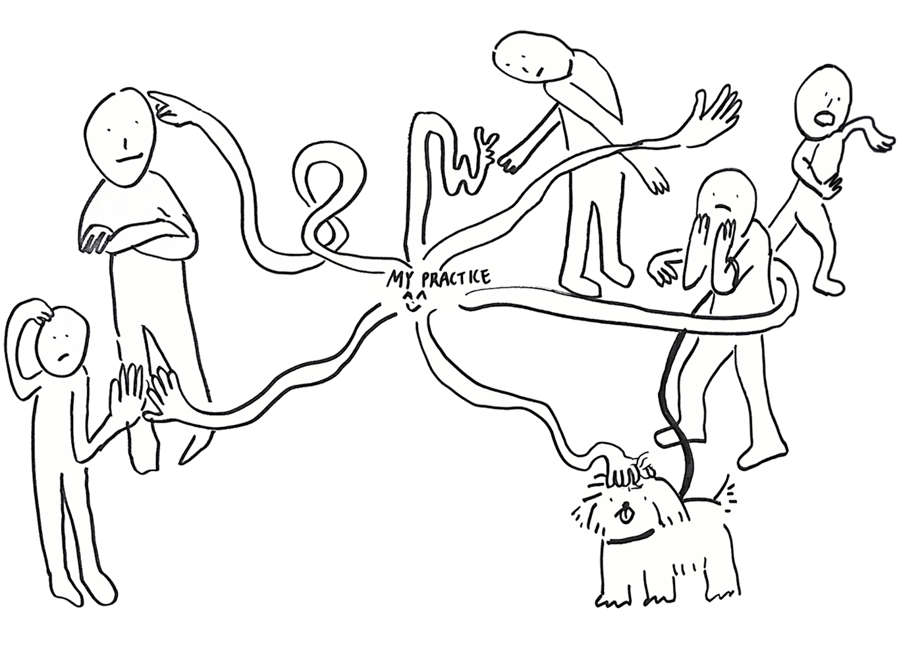

Chaeyoung Kim (KR) is an artist and researcher working in the Netherlands with an interest in bringing people together. Trained as a painter, her artistic practice is materialised by the use of illustration, physical props, self-publishing, and hosting. More recently, she has been researching the subjects of humour, intimacy, and community building. Her research is supported by a series of publishing acts, which she conceptualizes as 'intimate publishing'.
A thought shared through an interconnected bundle of headphones; an unexpected letter you find in your pocket; a story whispered to you through a baguette … These ‘minor’ publishing acts evoke one common quality: an intimate feeling. Now, place the word ‘intimate’ before ‘publishing’. You may notice some tension emerging between these two terms. Spark(l)ing Curiosities: Through Intimate Publishing shares how I came to the concept of ‘intimate publishing’. Through case studies, it explores the subtle nuances that intimacy could bring to the act of making things public. This publication itself is one such example. By taking the format of a calendar, it attempts to tiptoe into your personal space. You may build a relationship over time, once a month when turning the page. Or maybe the moment you read this description, the lifespan of the calendar may have passed. But, I hope the ideas of intimate publishing keep spark(l)ing curiosities.
To reach out 